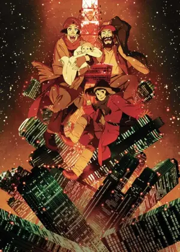

| Quick Facts | |
|---|---|
 | |
| Season: | X |
| Contract: | Mid-Season Christmas |
| Contractor: | Frazzle |
| Completed: | Yep ! |
| Format: | Movie |
| Author: | Satoshi Kon |
| Date: | 2003 |
| Genre: | Comedy, Christmas, Found Family, Tragedy |
| Link: | Anilist |
Let's be honest, I usually don't like what people call "Christmas Movie". These movies often fall into classic stories, without any specificity nor quality. Hopefully, Tokyo Godfathers proves that Christmas is a subject, more than a classification. This film contains more than enough specific characteristics, while its quality actually blew my mind, especially when compared to some modern shows.
The story seems simple at the beginning: 3 homeless people find a baby in the street, and must decide what to do with her. But Satoshi Kon had something else in mind, this isn't that simple. In fact it goes in all possible directions one could think about, making the movie pleasantly unpredictable. In every moment, the ingenuousness of a Christmas atmosphere brought me to smile, while the absolutely random elements ongoing kept me captivated – in short, the 92 minutes went by in a flash.
What's impressive is that even if the events seem to come out of nowhere, they come together as a very comprehensible and linear story, that tells us about how the Japanese society reacts to the homeless ones, how they build and consider family, how human's morals change lives, all of this while showing the daily lives of the homeless, how they have to fight life and society at the same time.
Every single character holds a unique personality and point of view through the movie. Each one has an obstacle to overcome, want to have a real family, have their own dream... So much emotions flow out of them that they feel real, they feel like a real human is depicted, and that only a human could have written their personalities. The characters, even the background ones, are clearly what make this film a good one, and fully creates its deepness.
The movie becomes very resourceful when it comes to life lessons. Gin left his family out of shame, and could not even talk about it, because of his moral and money debts, but by helping others, he learns the ability to start his life over once again, by receiving the winning lottery ticket. Which is pretty ironic, since it seems that the only way to win gambling is to wait for luck to show itself. Hana, fighting to get a family, but also to construct his personality, learns to overcome his desires and to fully understand others, helping them in a different way than Gin. Miyuki, a girl that was raised in innocence, found another family in the street, only to learn what living in society means, and even if it isn't shown at the end of the movie, she eventually returns to her father, having already learnt what she had done, and having lived enough to come back to her family. Everyone learns and teaches a lesson throughout the adventure, and the general idea is that helping others eventually lead to helping oneself, even if it has to come from miracles of wind.
As I said earlier, what caught my eyes in this movie is the extreme quality of animation. It looks like every single frame of the characters moving, speaking or anything is drawn on its own to create a smooth animation, very rounded thus somehow chubby. It helps a lot emphasizing the expressions of the characters, adds up to the comedy, and everything altogether is just so beautiful... I love this old style so much ! Even the credits, both opening and closing, are mixed in with the story, and have their own funny style.
There is also a big work on lighting and colors, and in certain scenes the light really create a mysterious atmosphere, yet so good-looking, with small light glowing like a Christmas tinsel.
There is an important role in background details to work with the main components, building up jokes and humor, or playing with the incoming plot. It is also used to describe what society does in the background, without acting, even when facing the obvious events before the crowd.
I was really pleased to see that movie, and had a great time watching this little family go through unbelievable challenges, yet witnessing deep relationships and learning interesting things about them. I loved the style so much that I would love to discover the other works by Satoshi Kon.
Christmas had to be the most joyful day of the year, it was for them, and their joy slipped into me. 10/10.